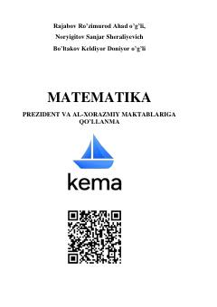

MPrezident va Al-Xorazmiy maktablariga tayyorgarlik uchun matematika fanidan masalalar to'plami.
Ushbu qo‘llanma Prezident va Al-Xorazmiy maktablariga kirish imtihonlariga tayyorgarlik ko‘rayotgan o‘quvchilar uchun mo‘ljallangan bo‘lib, matematika fanidan turli darajadagi masalalar va testlarni o‘z ichiga oladi. Kitobda natural sonlar, ularning xossalari, qo‘shish amallari hamda mantiqiy-murakkab masalalarni yechish usullari batafsil yoritilgan.